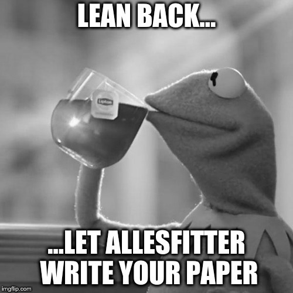

Why allesfitter?¶
{kind=link}
- graphical user interface, easy-to-use & all-in-one
- model multiple exoplanets, eclipsing binaries, phase curves, spots, and stellar flares [1]
- various MCMC and Nested Sampling algorithms (static vs. dynamic, multinest, slicing, …) [2]
- various baseline and noise fitting options (sampling vs. hybrid, GPs, splines, polynomials, …) [3]
- click a button, get a coffee, and let allesfitter write your paper (it creates all latex tables and plots)
Unleash the power of Bayesian evidence and do a meaningful model comparison!¶

- Is there evidence for an occultation?
- Do you see phase-variations or systematic noise patterns?
- Are those TTVs meaningful?
- Is your orbit circular or eccentric?
- So many questions - so much Bayesian evidence!
Footnotes
| [1] | powered by ellc (Maxted, 2016) and aflare (Davenport et al., 2014) |
| [2] | powered by emcee (Foreman-Mackey et al., 2013) and dynesty (Speagal, 2018) |
| [3] | powered by celerite (Foreman-Mackey et al., 2017) |